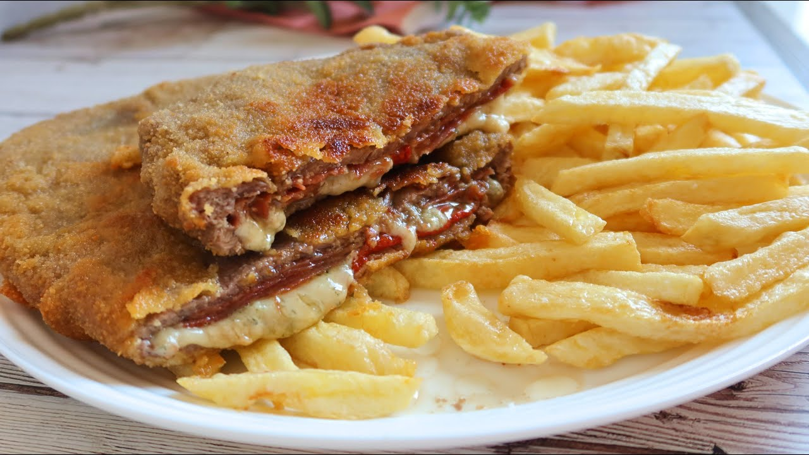

Cachopo
Volver al restaurante
Receta
Ingredientes
- 2 filetes al gusto (ternera, pollo, etc)
- Jamos iberico, serrano o cecina.
- Queso en lonchas asturiano o queso cabrales.
- Huevo.
- Pan rallado.
- Aceite de oliva suave a aceite de girasol.
Preparacion
